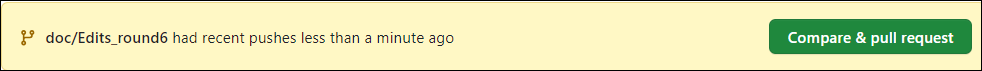
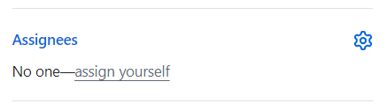

Create a PR#
This page describes how to create a PR to update or enhance PyAnsys documentation. If you have not yet cloned the repository and created a local branch to work in, see Clone and branch a repository.
Make changes in your local branch#
In your local branch, make changes to RST and PY files to improve the PyAnsys documentation. As you work, periodically run the tools described in the next few topics to check your changes. You should also periodically build the documentation locally so that you can verify if new or changed content is rendered correctly.
As you work, remember to use your preferred Git tool to periodically commit your changes and pull merged changes from the remote main branch into your local branch. Because resolving conflicts is always painful, you want to do all that you can to minimize the possible occurrence of conflicts and resolve any that do arise locally.
Run pre-commit locally#
pre-commit is a tool for ensuring that all the changes that you make to files in your project successfully pass all checks run by the code style tools that are configured as part of the CI/CD process. These tools, which typically include Ruff, analyze, format, review, and improve code quality and security. For more information on the code style tools most commonly configured for use in PyAnsys projects, see Code style tools.
Because you do not want the Code style check for your PyAnsys project to fail
when you create or push changes to a PR, you want to periodically run pre-commit
locally to proactively check if your changes are compliant. This tool resolves most
code style issues automatically and adds any files it changes to Git’s commit list.
To run pre-commit locally:
If the Ansys Python Manager and Administrator window are not still open, then open them. For more information, see Install and use the Ansys Python Manager.
In the Administrator window, run this command:
pre-commit run --all-files
pre-commitinitializes the code style tools configured for your PyAnsys project if this is the first time that you are running it in this session. It then shows status information for the various checks.In the Windows Administrator window, press the up arrow to display the command for running
pre-commitagain and then run it to see if all issues have been automatically resolved.For issues that
pre-commitcould not automatically resolve, such as those found by thecodespellcheck, it tells you where the issues are so that you can manually resolve them. Here are some issues that you might have to resolve:An occurrence of a spelling error or an unrecognized word
A line of code that exceeds the maximum line length
A failure when creating a cross reference to find the target title or caption
A formatting error such as this one:
Explicit markup ends with a blank line; unexpected indent.
You can configure
codespellto ignore words that it flags as errors in PY files by adding one of two arguments to thecodespellhook in thepre-commit-config.yamlfile in the repository’s root directory.To have
codespellignore words that you place in a TXT file namedignore_words.txtin the repositority’s root directory, add this argument to thecodespellhook:hooks: - id: codespell args: ["--ignore-words=ignore_words.txt"]
To have
codespellaccept words that you place in theaccept.txtfile for Vale, which is described in the next topic, add this argument to thecodespellhook:hooks: - id: codespell args: ["--ignore-words", "doc/styles/config/vocabularies/ANSYS/accept.txt"]
Manually resolve any issues that
pre-commitcould not resolve. For more information, see Resolve issues causing check failures.In the Windows Administrator window, press the up arrow to display the command for running
pre-commitagain and then run it.Resolve any issues, repeating these last few steps until
pre-commitshows that all code style checks have passed.
Run Vale locally#
Vale is a tool for maintaining a consistent style and voice in your documentation based on a given style guide. For PyAnsys projects, Vale uses rules from the Google developer documentation style guide to check the content in RST and MD files. In addition to checking for style guide violations, Vale checks for other common problems, such as extra spaces, repeated words, excessive use of jargon, sexist language, and incorrect capitalization. Vale does not check the content surrounded in double backticks or in code blocks.
When Vale detects an issue, it displays a suggestion, warning, or error. While you can choose to ignore a suggestion or warning, you must resolve all errors. Otherwise, when you create or push changes to a PR, the Vale check fails, which also causes the Documentation style check to fail.
Because you do not want these checks to fail on the PR, you want to periodically run Vale locally to proactively check that your changes are compliant.
To run Vale locally:
If the Ansys Python Manager and Administrator window are not still open, open them. For more information, see Install and use the Ansys Python Manager.
From the Windows Administrator window, use the
cdcommand to go to the library’sdocdirectory.For example, to go to the
docdirectory for this guide, you might run thiscdcommand:cd C:\AnsysDev\GitRepos\PyAnsys\pyansys-dev-guide\doc
To ensure that the latest rules for the Google style guidelines are installed locally, run this command:
vale syncNote
The preceding command downloads the latest rules for the Google developer’s documentation style guide to the
doc/styles/Googlefolder. If the.gitignorefile in your project’s root directory is not set up to ignore these YML style files, add the following lines to the end of this file:# Vale doc/styles/Google \#* .\#* /.ipynb_checkpoints
The next several steps show how to use various Vale commands to check RST and MD files in different directories.
To check all RST and MD files in the
docdirectory, run this command:vale .If Vale displays errors in
build\html\_static\404.rst, it is checking files generated by a previous local build of the documentation. Delete thehtmldirectory and then run the preceding command again.To check all RST and MD files in the repository, go to the root directory and run this command:
vale --config=doc/.vale.ini .
To check all RST and MD files in only a particular directory, start the command with
valefollowed a space and then the name of the directory.To resolve errors and other issues that Vale raises, either edit files or add words or phrases to the
accept.txtfile indoc\styles\config\vocabularies\ANSYS.
Here is an explanation of how Vale is set up in a PyAnsys project. The doc directory
contains the .vale.ini configuration file and the styles directory.
The
.vale.iniconfiguration file specifies that Vale is to check content in RST and MD files to ensure that it is compliant with the Google developer documentation style guide, along with any custom Ansys rules.In the
stylesdirectory, theconfig/vocabularies/ANSYSdirectory containsaccept.txtandreject.txtfiles. You can add words or phrases that Vale does not recognize to theaccept.txtfile, and you can add recognized words or phrases that you want Vale to raise as issues to thereject.txtfile.
Vale is case-aware. When adding words to the accept.txt file, use an appropriate
regular express if an entry should be case-insensitive.
To make an entire word case-insensitive, use a
(?i)prefix. For example, add(?i)Ansysto have Vale accept “Ansys,” “ANSYS,” and “ansys.”To make it acceptable for a word to start in either uppercase or lowercase, place both cases of the first letter in brackets. For example, add
[Dd]ocstrings.
Occasionally Vale raises issues that are not considered errors in PyAnsys projects. For more information, see Work around Vale issues.
Note
If Vale raises a runtime error when running locally, the error indicates the file where the issue exists. In all likelihood, the file has two links that use the same display text to the same named target. Modifying the display text for one of the two links should resolve the issue.
Build documentation locally#
Sphinx is a tool for generating documentation. While designed primarily for generating documentation for Python projects, it can be used for documenting other programming languages and projects.
The build process for a project’s documentation is specified in a configuration (conf.py)
file in the doc/source directory. This directory also contains a Makefile file and a
make.bat file for automating the building process. Different builders render different
documentation output, such as HTML, LaTeX, or PDF.
When making lots of changes, consider building the HTML documentation locally so that you can
see if your changes are rendered correctly. Otherwise, you can download and view the documentation
artifacts that are built by the pipeline’s ci-build.yml file once the Documentation building
check on the PR passes. For more information, see Download and view documentation artifacts.
To build documentation locally:
If the Ansys Python Manager and Administrator window are not still open, open them. For more information, see Install and use the Ansys Python Manager.
From the Windows Administrator window, use the
cdcommand to go to the library’sdocdirectory.For example, to go to the
docdirectory for this guide, you might run thiscdcommand:cd C:\AnsysDev\GitRepos\PyAnsys\pyansys-dev-guide\doc
Run the
makecommand for you operating system.On Windows, run
make.bat html.On Linux or macOS, run
make html.
The resulting HTML files are created in the project’s
doc/_build/htmldirectory by default.To view the HTML documentation, use your favorite browser to open the
index.htmlfile:<browser> .doc/_build/html/index.html
If a project’s CI/CD process uses tox for testing and task automation, rather than using the Sphinx documentation-building method, check the integrity of the documentation by running this command locally:
tox -e doc
tox places the resulting HTML files in the project’s .tox/doc_out directory by default.
To view the HTML documentation, use your favorite browser to open the index.html file in
this directory:
<browser> .tox/doc_out_html/index.html
If you would like tox to place the resulting HTML files in the project’s doc/_build/html directory,
you can replace the last two lines in the tox.ini file with these two lines:
commands =
sphinx-build -d "{toxworkdir}/doc_doctree" doc/source "{toxinidir}/doc/_build/html" --color -vW -b html -j auto
Create a PR#
Before you use your Git tool to push your changes to a PR, first use it to pull merged changes from the remote main branch to your local branch. If there are any conflicts, resolve them in your local branch.
To create a PR:
Use your Git tool to push your changes to the remote main branch.
On the main page of the repository, a notification indicates that a branch had recent pushes.
Click Compare & pull request. The Open a pull request window opens.
Supply a commit message and an optional extended description.
Assign the PR to yourself by clicking assign yourself on the right side of the window.
If the PR is meant to fix an issue, add Closes #issue_number to the PR description.
Click Create pull request. Or, if you want to create a draft pull request, use the dropdown to select Create draft pull request.
A draft pull request cannot be merged until you mark it as ready for review,
Tip
The Ansys Review Bot can perform a review of your changes. For more information, see Request a bot review.
Resolve failed checks#
GitHub integrates with tools that automate code and documentation style checking, testing, and deployment, which makes it far easier to streamline the development process and maintain high code quality. When you create or submit changes to a PR, all checks that are configured in the project’s CI/CD process run. When a check fails, you must resolve the issues causing the failure. For more information, see Resolve issues causing check failures.
Download and view documentation artifacts#
If the Documentation building check on the PR completes successfully, both HTML and PDF documentation artifacts are generated:
documentation-htmldocumentation-pdf
You can download and unzip these artifacts to see how the documentation for this PR is rendered. While you generally do not need to download the PDF artifact, you should download and extract the HTML artifact so that you can confirm that the changes in the PR render correctly in the documentation.
To download and view documentation artifacts:
On the repository’s Actions page, click the GitHub CI workflow run for your pull request.
Under Artifacts, which is at the bottom of the page, click the artifacts to download.
As mentioned earlier, you likely only want to download the
documentation-htmlartifact.Go to your
Downloadsfolder and use a tool like 7-Zip to extract the HTML artifact (and PDF artifact if you also downloaded it).To view the generated HTML documentation, in the folder that you extracted this artifact’s files to, double-click the
index.htmlfile to open the HTML documentation.To view the generated PDF documentation, in the folder that you extracted this artifact’s file to, double-click the PDF file to open it.
Note
The artifacts for a PR are only available if the Documentation building check completed successfully. If you click the GitHub CI workflow run for a PR where this check failed, no artifacts are shown under Artifacts. Artifacts remain available after PRs are merged.
Tag reviewers#
In the PR, the right pane of the Conversation page displays a Reviewers area. In many PyAnsys projects, maintainers are automatically assigned as reviewers. You can manually assign any number of reviewers. You can also see how many approving reviewers are required before the PR can be merged. This number varies from one PyAnsys project to another.
Manually add reviewers to your PR:
Click the gear icon on the right side of this area.
Choose the reviewer to add.
If a specified number of maintainers must review and approve the PR, the PR displays a Code owner review required area with status information.
Tip
You can add comments to your own PR as indicated in Add a comment and then resolve them as indicated in the next topic. If you intend to keep working in your local branch, remember to always use your Git tool to pull all changes made in the remote branch for your PR into your local branch.
Resolve reviewer comments#
A reviewer can make a general comment on your overall PR and both general and specific comments on a single changed line or multiple consecutive changed lines in your PR. For more information, see Add a comment in the information for reviewing a PR.
The Conversation page of your PR shows all overall comments on your PR and all
unresolved comments on changed lines in your PR. Because overall comments are informational,
they do not display Resolve conversation buttons. However, all unresolved comments on
changed lines do display this button.
Here is how to review and resolve comments on changed lines:
On the Conversation page, determine whether the comment requires you to make changes to one or more files in your local branch.
If the comment is merely informational, click
Resolve conversation.If you must make changes in your local branch, do not click
Resolve conversation.Instead, make these changes and push them to the PR.
If the comment makes changes to one or more lines, determine if you want to commit the suggestion.
Note
If you click Commit suggestion on a reviewer’s suggestion and then click Commit changes in the window that opens, the suggestion is immediately committed to the PR, which triggers a build. Because the CI/CD process is resource intensive, best practice is to commit suggestions in batch, which triggers the build process only once. Subsequent steps assume that you are following this best practice.
To commit the suggestion, click Add suggestion to batch.
Repeat the preceding steps to review and resolve comments or commit suggestions.
At the top of the PR, the Commit suggestions option indicates the number of suggestions that are waiting to be committed in batch.
When you are ready to commit all suggestions in batch, click Commit suggestions at the top of the PR and, in the window that opens, click Commit Changes.
If you intend to keep working in your local branch, use your Git tool to pull all changes made in the remote branch for your PR into your local branch.
GitHub notifies you if there are any merge conflicts. You can use the GitHub editor to find and edit the conflicts.
Merge your PR#
You can merge your PR only after these criteria are met:
All required reviewers have approved the PR.
All conversations in the PR are resolved.
All checks configured in the CI/CD process have passed.
The branch has no conflicts with the base branch.
Note
If the branch is out of date with the remote main branch, merging is blocked. To the right of the This branch is out-of-date with the base branch notification is an Update branch option. Clicking it merges the latest changes in the main branch into this branch with a merge commit. While the dropdown provides an option for rebasing this PR on top of the latest changes and then force pushing the PR, choosing this option is not advised.
When these criteria are met, a required reviewer might merge the PR for you. If not, you can merge the PR:
Click the Squash and merge option.
In the window that opens, provide an optional extended description and click Confirm squash and merge.
Tip
When you finish resolving comments, you can click the Enable auto-merge (squash) option to have PR be automatically merged when all criteria are met.
Pull changes and delete the merged branch#
One the PR is merged, use your GitHub tool to pull all changes from the remote main branch on GitHub into the main branch of your locally cloned repository. Also delete the local branch with the changes that have now been merged. For additional changes, create another local branch to work in.
Remove untracked files and directories#
To remove untracked files and directories from your working directory, from the
doc folder, periodically run this command:
git clean -fdx .
For more information on this Git command, see Remove files and directories untracked by Git.
When you next run pre-commit, the code style tools configured for
your PyAnsys project must be initialized once again. For more information,
see Run pre-commit locally.
Before you can run Vale again locally, you must download the latest rules for the
Google developer’s documentation style guide to the doc/styles/Google folder
by running this command:
vale sync
You can then run Vale with this command:
vale .
For more information, see Run Vale locally.